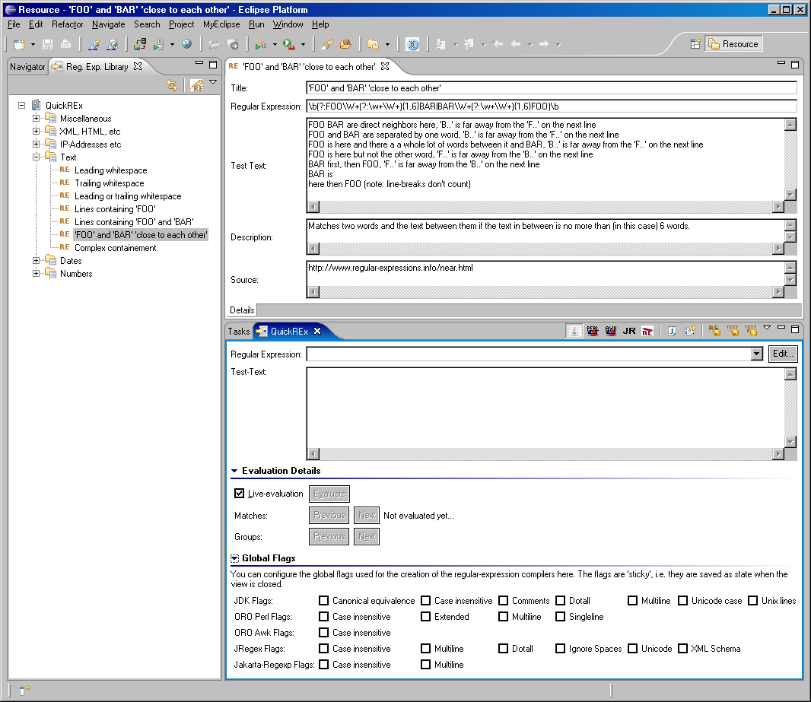

If the Plugin is installed, you should find a category named QuickREx under Window > Show View > Other....
The plugin contributes two views and an editor as well as a wizard. The views and an instance of the editor are displayed in the screenshot below.
The QuickREx view displayed in the lower right area is used to develop, test and use regular expressions. Details on how the view is used can be found here.
The left hand side in the screenshot holds the regular expression library in its default state. The regular expression library is used to keep, organize, and search for regular expressions. It is described in detail here. The editor area is used for the regular-expression entry editor which is also described here.